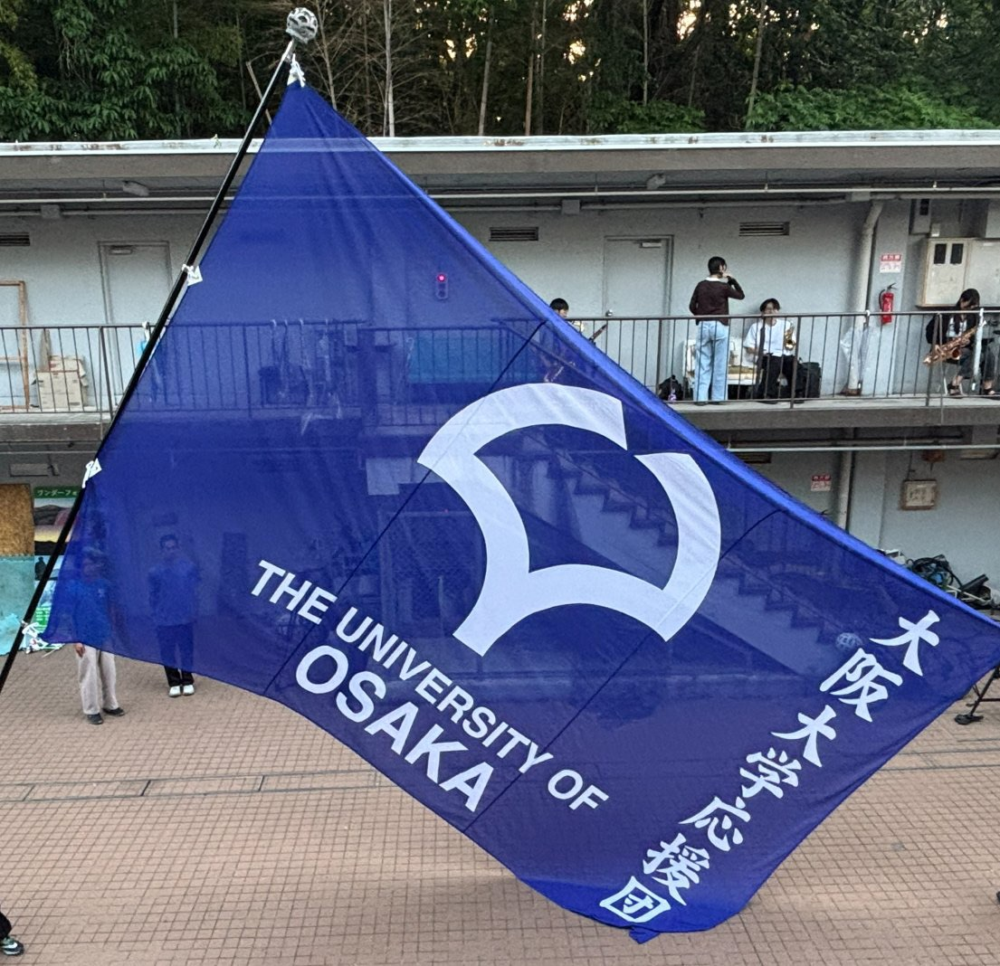

ABOUT
大阪大学応援団
大阪大学応援団は、リーダー部・チアリーダー部・吹奏部の 三部からなる大阪大学の応援団です。
応援という活動を通じて、大学の仲間たちを支え、 共に喜び、共に戦うことを大切にしています。
本サイトでは、大阪大学応援団の活動や演目、歴史、 そして団員たちの姿を記録していきます。

ABOUT
大阪大学応援団は、リーダー部・チアリーダー部・吹奏部の 三部からなる大阪大学の応援団です。
応援という活動を通じて、大学の仲間たちを支え、 共に喜び、共に戦うことを大切にしています。
本サイトでは、大阪大学応援団の活動や演目、歴史、 そして団員たちの姿を記録していきます。